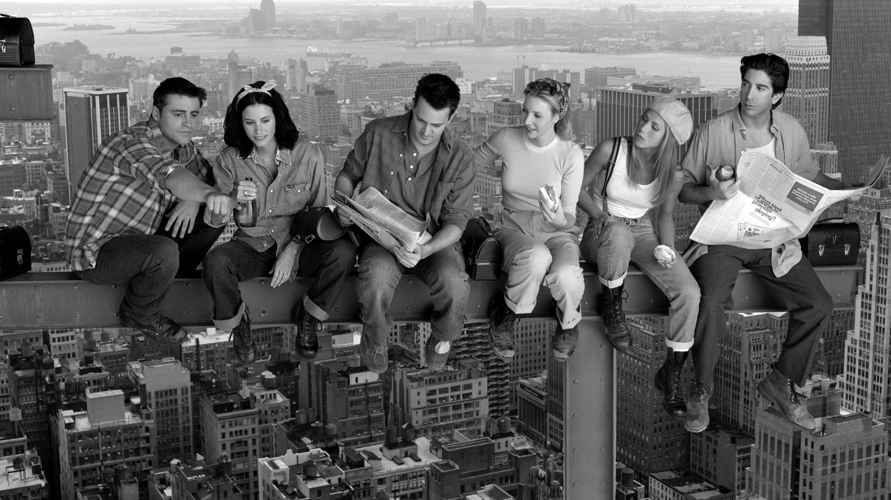
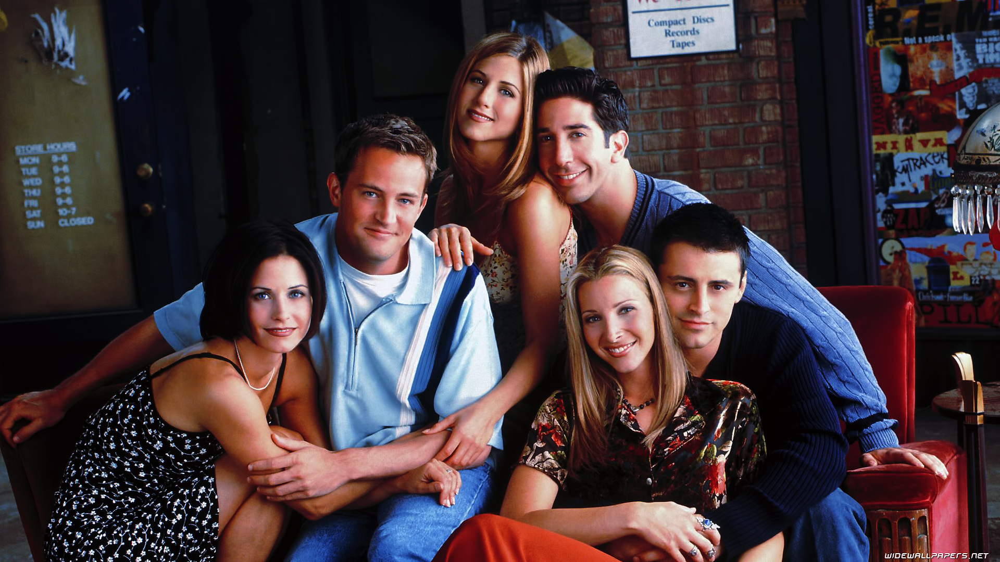
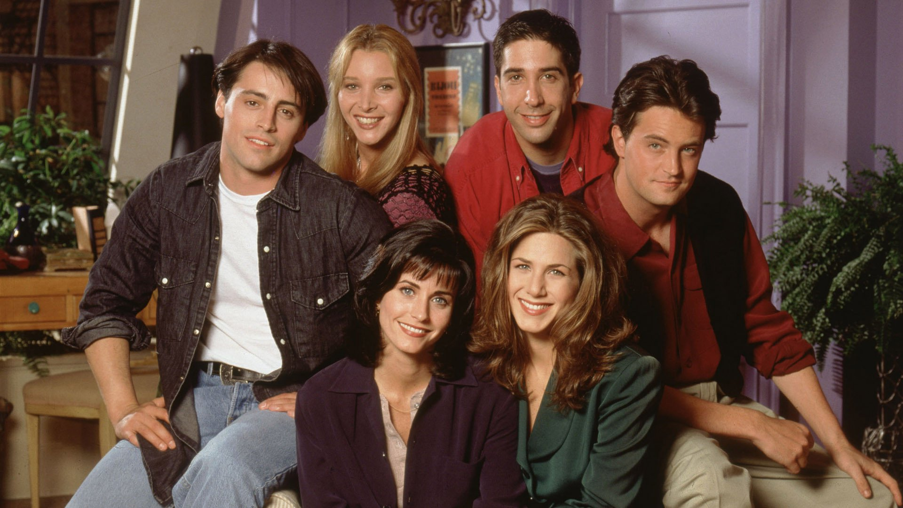
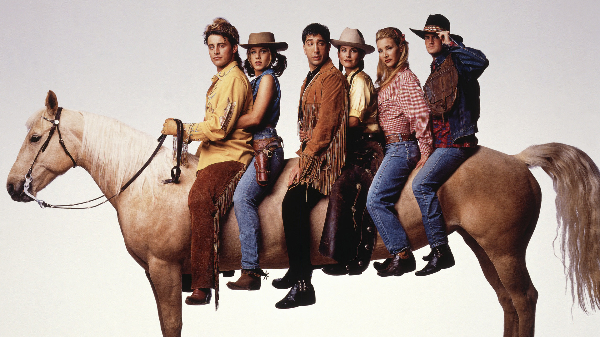
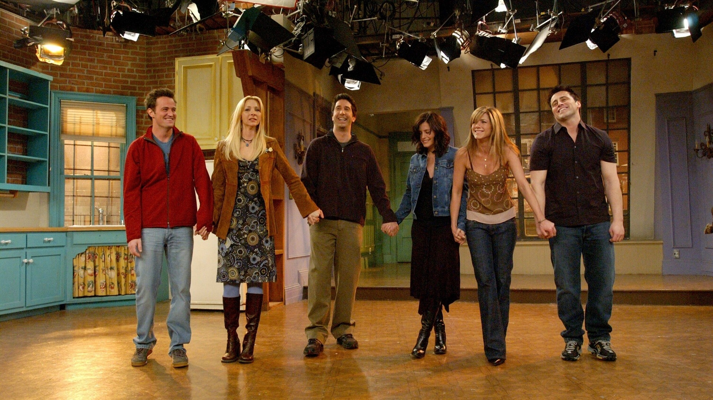
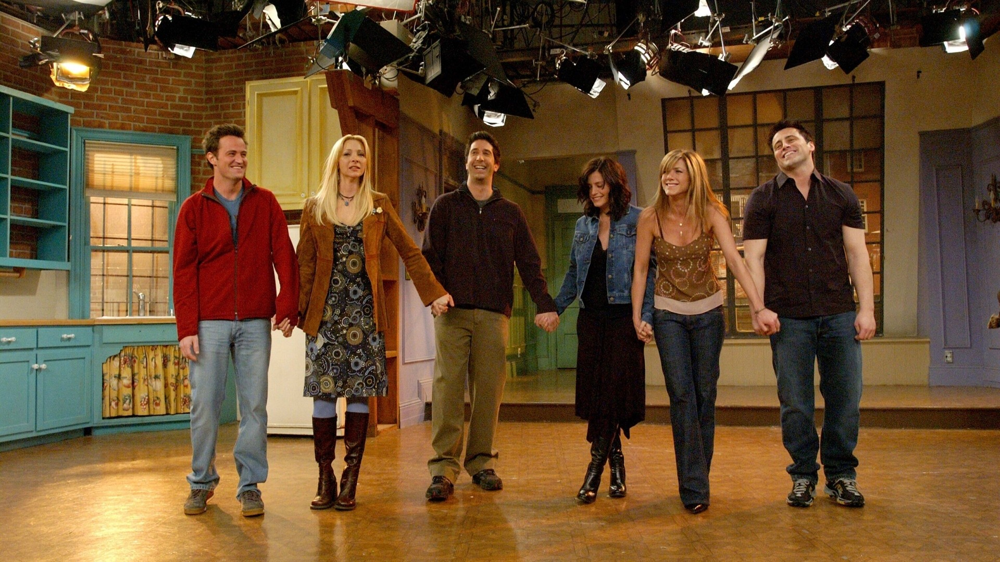
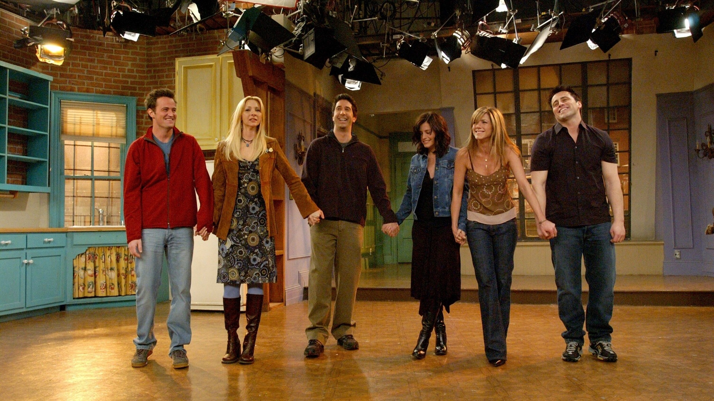

 



Seis jovens são unidos por laços familiares, românticos e, principalmente, de amizade, enquanto tentam vingar em Nova York. Rachel é a garota mimada que deixa o noivo no altar para viver com a amiga dos tempos de escola Monica, sistemática e apaixonada pela culinária.